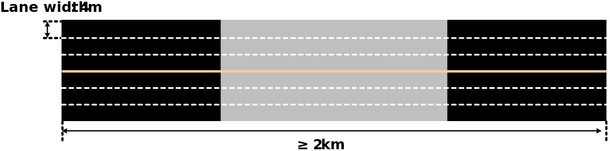
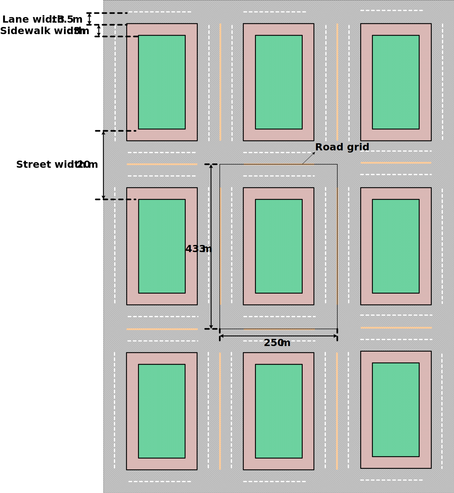
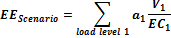

3GPP TR 38.913 V17.0.0 (2022-03)
Technical Report
3rd Generation Partnership Project;
Technical Specification Group Radio Access Network;
Study on Scenarios and Requirements for
Next Generation Access Technologies;
(Release 17)
The present document has been developed within the 3rd
Generation Partnership Project (3GPP TM) and may be further
elaborated for the purposes of 3GPP.
The present document has not been subject to any approval process by the
3GPP Organizational Partners and shall not be implemented.
This Report is provided for future development work within 3GPP only.
The Organizational Partners accept no liability for any use of this
Specification.
Specifications and Reports for implementation of the 3GPP TM
system should be obtained via the 3GPP Organizational Partners'
Publications Offices.
Keywords
Radio
3GPP
Postal address
3GPP support office address
650 Route des Lucioles - Sophia Antipolis
Valbonne - FRANCE
Tel.: +33 4 92 94 42 00 Fax: +33 4 93 65 47 16
Internet
Copyright Notification
No part may be reproduced except as authorized by written
permission.
The copyright and the foregoing restriction extend to reproduction in
all media.
© 2022, 3GPP Organizational Partners (ARIB, ATIS, CCSA, ETSI, TSDSI, TTA, TTC).
All rights reserved.
UMTS™ is a Trade Mark of ETSI registered for the benefit of its members
3GPP™ is a Trade Mark of ETSI registered for the benefit of its
Members and of the 3GPP Organizational Partners
LTE™ is a Trade Mark of ETSI registered for the benefit of its Members
and of the 3GPP Organizational Partners
GSM® and the GSM logo are registered and owned by the GSM Association
Foreword 5
1 Scope 6
2 References 6
3 Definitions, symbols and abbreviations 7
3.1 Definitions 7
3.2 Symbols 7
3.3 Abbreviations 7
4 Introduction 8
5 Objectives 8
6 Scenarios 9
6.0 General 9
6.1 Deployment scenarios 9
6.1.1 Indoor hotspot 10
6.1.2 Dense urban 11
6.1.3 Rural 12
6.1.4 Urban macro 13
6.1.5 High speed 14
6.1.6 Extreme long distance coverage in low density areas 16
6.1.7 Urban coverage for massive connection 16
6.1.8 Highway Scenario 17
6.1.9 Urban Grid for Connected Car 19
6.1.10 Commercial Air to Ground scenario 21
6.1.11 Light aircraft scenario 21
6.1.12 Satellite extension to Terrestrial 21
7 Key performance indicators 23
7.1 Peak data rate 23
7.2 Peak Spectral efficiency 23
7.3 Bandwidth 23
7.4 Control plane latency 23
7.5 User plane latency 24
7.6 Latency for infrequent small packets 24
7.7 Mobility interruption time 24
7.8 Inter-system mobility 24
7.9 Reliability 25
7.10 Coverage 25
7.10.1 Extreme Coverage 25
7.11 UE battery life 26
7.12 UE energy efficiency 26
7.13 Cell/Transmission Point/TRxP spectral efficiency 26
7.14 Area traffic capacity 27
7.15 User experienced data rate 27
7.16 5th percentile user spectrum efficiency 28
7.17 Connection density 28
7.18 Mobility 29
7.19 Network energy efficiency 29
8 Requirements for architecture and migration of Next Generation Radio Access Technologies 31
9 Supplementary-Service related requirements 32
9.1 Multimedia Broadcast/Multicast Service 32
9.2 Location/Positioning Service 32
9.3 Critical Communications services 33
9.3.1 Public safety communications 33
9.3.2 Emergency communications 33
9.3.3 Public warning/emergency alert systems 33
9.4 V2X communication 33
10 Operational requirements 34
10.0 General 34
10.1 Spectrum 34
10.1.1 Void 34
10.1.2 Channel bandwidth scalability 34
10.1.3 Void 34
10.1.4 Duplexing flexibility 34
10.1.5 Support of shared spectrum 34
10.1.6 Spectrum range 34
10.2 UL Link Budget 34
10.3 Support for wide range of services 34
10.4 Co-existence and interworking with legacy RATs 34
10.4.1 Co-existence with LTE 34
10.4.2 Co-existence with UMTS and GSM/EDGE 35
10.4.3 V2X communication 35
10.5 Void 35
10.6 Interworking with non-3GPP systems 35
10.6.1 General 35
10.6.2 Interworking with WLAN 35
10.6.3 Void 35
10.7 Void 35
10.8 Easy operation and Self Organization requirements 35
10.9 Void 36
10.10 Cost-related requirements 36
10.10.1 Balance of complexity and performance 36
10.10.2 Low-cost requirements 36
10.11 Energy-related requirements 36
10.12 Security and Privacy related requirement relevant for Radio Access 36
10.13 Void 36
10.14 Lawful Interception 36
10.15 Backhaul and signalling optimization requirements 36
10.16 Relay requirements 37
10.17 High availability 37
10.18 Void 37
11 Testing and Conformance Requirements 38
Annex A: Change history 39
This Technical Report has been produced by the 3rd Generation Partnership Project (3GPP).
The contents of the present document are subject to continuing work within the TSG and may change following formal TSG approval. Should the TSG modify the contents of the present document, it will be re-released by the TSG with an identifying change of release date and an increase in version number as follows:
Version x.y.z
where:
x the first digit:
1 presented to TSG for information;
2 presented to TSG for approval;
3 or greater indicates TSG approved document under change control.
y the second digit is incremented for all changes of substance, i.e. technical enhancements, corrections, updates, etc.
z the third digit is incremented when editorial only changes have been incorporated in the document.
This document is related to the technical report for this study item "Scenarios and Requirements for Next Generation Access Technologies" [1]. The objective of the study item is to identify the typical deployment scenarios associated with attributes such as carrier frequency, inter-site distance, user density, maximum mobility speed, etc, and to develop requirements for next generation access technologies for the identified deployment scenarios taking into account, but not limited to, the ITU-R discussion on IMT-2020 requirements.
This document contains scenarios and requirements for next generation access technologies, which can be used as not only guidance to the technical work to be performed in 3GPP RAN WGs, but also input for ITU-R to take into account when developing IMT-2020 technical performance requirements.
The following documents contain provisions which, through reference in this text, constitute provisions of the present document.
[1] 3GPP SID FS_NG_SReq: "Scenarios and Requirements for Next Generation Access Technologies" RP-152257, “New Study Item Proposal - Study on Scenarios and Requirements for Next Generation Access Technologies”, CMCC, RAN#70, Sitges, Spain, Dec. 7 - 11, 2015.
[2] 3GPP TR 21.905: "Vocabulary for 3GPP Specifications".
[3] 3GPP TR 22.891: "Feasibility Study on New Services and Markets Technology Enablers".
[4] Recommendation ITU-R M.2083: IMT Vision - "Framework and overall objectives of the future development of IMT for 2020 and beyond" (September 2015).
[5] ITU-R report M.2135, Guidelines for evaluation of radio interface technologies for IMT-Advanced.
[6] 3GPP TR 36.878: "Study on performance enhancements for high speed scenario in LTE".
[7] 3GPP TR 23.799: " Study on Architecture for Next Generation System".
[8] 3GPP TS 23.303: " Proximity-based services (ProSe); Stage 2".
[9] 3GPP TS 22.179: "Mission Critical Push To Talk (MCPTT) over LTE; Stage 1".
[10] 3GPP TS 22.468: "Group Communication System Enablers for LTE (GCSE_LTE)".
[11] 3GPP TR 36.890: "Evolved Universal Terrestrial Radio Access (E-UTRA); Study on single-cell point-to-multipoint transmission for E-UTRA".
[12] 3GPP TS 22.101: "Service aspects; Service principles".
[13] 3GPP TS 22.071 "Location Services (LCS); Service description; Stage 1".
[14] 3GPP TS 22.153: "Multimedia priority service".
[15] 3GPP TS 22.268: "Public Warning System (PWS) requirements".
[16] 3GPP TS 33.106: "3G security; Lawful interception requirements".
[17] 3GPP TS 22.185: "Service requirements for V2X services".
[18] 3GPP TS 22.886: "Study on enhancement of 3GPP Support for 5G V2X Services".
[19] 3GPP TR 33.899: "Study on the security aspects of the next generation system".
[20] 3GPP TS 22.280: "Mission Critical Services Common Requirements (MCCoRe); Stage 1".
[21] 3GPP TS 22.281: "Mission Critical Video services over LTE".
[22] 3GPP TS 22.282: "Mission Critical Data services over LTE".
[23] 3GPP TS 22.346: "Isolated Evolved Universal Terrestrial Radio Access Network (E-UTRAN) operation for public safety; Stage 1".
For the purposes of the present document, the terms and definitions given in 3GPP TR 21.905 [1] and the following apply. A term defined in the present document takes precedence over the definition of the same term, if any, in 3GPP TR 21.905 [1].
Transmission Reception Point (TRxP): Antenna array with one or more antenna elements available to the network located at a specific geographical location for a specific area.
For the purposes of the present document, the following symbols apply:
t_gen The time during which data or access request is generated
t_sendrx The time during which data or access request is sent or received
For the purposes of the present document, the abbreviations given in
3GPP TR 21.905 [2] and the following apply.
An abbreviation defined in the present document takes precedence over
the definition of the same abbreviation, if any, in 3GPP
TR 21.905 [2].
ARPU Average Revenue Per User
BBU Baseband Unit
BS Base Station
CAPEX Capital Expenditure
CDF Cumulative Distribution Function
CN Core Network
D2D Device to Device
DL Downlink
DRX Discontinuous Reception
EE Energy Efficiency
eMBB enhanced Mobile BroadBand
EMF Electric and Magnetic Fields
eNB evolved Node B
eV2X enhanced Vehicle to Everything
FDD Frequency Division Duplex
GCSE_LTE Group Communication System Enablers for LTE
GEO Geostationary orbit
GNSS Global Navigation Satellite System
HEO High Earth Orbit
IMT International Mobile Telecommunicationss
InH Indoor Hotspot
ISD Inter-Site Distance
ITU International Telecommunication Union
ITU-R International Telecommunication Union Radiocommunication Sector
KPI Key Performance Indicator
LEO Low Earth Orbit
MEO Medium Earth Orbit
MBB Mobile BroadBand
MaxCL Maximum Coupling Loss
MCPTT Mission-Critical Push-To-Talk
mMTC massive Machine Type Communications
NR New Radio
OPEX Operational Expenditure
ProSe Proximity Services
QoE Quality of Experience
QoS Quality of Service
RAN Radio Access Network
RAT Radio Access Technology
RF Radio Frequency
RMa Rural Macro
RRH Remote Radio Head
RSU Roadside Unit
RTT Round Trip Time
Rx Receiver
SA Service and System Aspect
SC-PTM Single-Cell Point-to-Multipoint transmission
SDU Service Data Unit
SFN Single Frequency Network
SINR Signal-to-Interference-plus-Noise Ratio
SON Self Organized Network
TDD Time Division Duplex
TR Technical Report
TRxP Transmission Reception Point
Tx Transmitter
UE User Equipment
UL Uplink
UMa Urban Macro
UMi Urban Micro
URLLC Ultra-Reliable and Low Latency Communications
V2X Vehicle to Everything
WG Working Group
WLAN Wireless Local Area Network
WRC World Radiocommunication Conference
At the 3GPP TSG RAN #70 meeting, the Study Item description on "Scenarios and Requirements for Next Generation Access Technologies" was approved [1].
The justification of the Study Item was that a fully mobile and connected society is expected in the near future, which will be characterized by a tremendous amount of growth in connectivity, traffic volume and a much broader range of usage scenarios. Some typical trends include explosive growth of data traffic, great increase of connected devices and continuous emergence of new services. Besides the market requirements, the mobile communication society itself also requires a sustainable development of the eco-system, which produces the needs to further improve system efficiencies, such as spectrum efficiency, energy efficiency, operational efficiency and cost efficiency. To meet the above ever-increasing requirements from market and mobile communication society, next generation access technologies are expected to emerge in the near future. A study item to identify typical deployment scenarios for next generation access technologies and the required capabilities in each corresponding deployment scenarios should be considered.
In order to meet the deployment scenarios and requirements, studies for next generation access technologies should be carried out in at least, but not limited to, the following areas, designs for next generation access technologies RAN should strive for enough flexibility to support current envisaged and future requirements for the different use cases, e.g., from SA1 3GPP TR 22.891 [3], i.e., to support for wide range of services.
This subsection briefly introduces the three usage scenarios defined by ITU-R IMT for 2020 and beyond [4] is envisaged to expand and support diverse families of usage scenarios and applications that will continue beyond the current IMT. Furthermore, a broad variety of capabilities would be tightly coupled with these intended different usage scenarios and applications for IMT for 2020 and beyond. The families of usage scenarios for IMT for 2020 and beyond include:
- eMBB (enhanced Mobile BroadBand)
- mMTC (massive Machine Type Communications)
- URLLC (Ultra-Reliable and Low Latency Communications)
Deployment scenarios for eMBB, mMTC and URLLC are described in this TR. Other deployment scenarios related to eV2X (enhanced Vehicle to Everything) services are also described in this TR. Not all requirements apply to all deployment scenarios described in the TR. The mapping between requirements and deployment scenarios is described per KPI in Chapter 7.However, some of eMBB deployment scenarios may possibly be reused to evaluate mMTC and URLLC, or some specific evaluation tests (e.g., link-level simulation) can be developed to check whether the requirements can be achieved.
High-level descriptions on deployment scenarios including carrier frequency, aggregated system bandwidth, network layout / ISD, BS / UE antenna elements, UE distribution / speed and service profile are proposed in this TR. It is assumed that more detailed attributes and simulation parameters, for example, the channel model, BS / UE Tx power, number of antenna ports, etc. should be defined in the new RAT study item.
The indoor hotspot deployment scenario focuses on small coverage per site/TRxP (transmission and reception point) and high user throughput or user density in buildings. The key characteristics of this deployment scenario are high capacity, high user density and consistent user experience indoor.
Some of its attributes are listed in Table 6.1.1-1.
Table 6.1.1-1: Attributes for indoor hotspot
| Attributes | Values or assumptions |
|---|---|
Carrier Frequency NOTE1 |
Around 30 GHz or Around 70 GHz or Around 4 GHz |
Aggregated system bandwidth NOTE2 |
Around 30GHz or Around 70GHz: Up to 1GHz (DL+UL) NOTE3 Around 4GHz: Up to 200MHz (DL+UL) |
| Layout | Single layer: - Indoor floor (Open office) |
| ISD | 20m (Equivalent to 12TRxPs per 120m x 50m) |
| BS antenna elements NOTE4 | Around 30GHz or Around 70GHz: Up to 256 Tx and Rx antenna elements Around 4GHz: Up to 256 Tx and Rx antenna elements |
| UE antenna elements NOTE4 | round 30GHz or Around 70GHz: Up to 32 Tx and Rx antenna elements Around 4GHz: Up to 8 Tx and Rx antenna elements |
| User distribution and UE speed | 100% Indoor, 3km/h, 10 users per TRxP |
| Service profile | NOTE: Whether to use full buffer traffic or non-full-buffer traffic depends on the evaluation methodology adopted for each KPI. For certain KPIs, full buffer traffic is desirable to enable comparison with IMT-Advanced values. |
NOTE1: The options noted here are for evaluation purpose, and do not mandate the deployment of these options or preclude the study of other spectrum options. A range of bands from 24.25 GHz – 52.6 GHz identified for WRC-19 are currently being considered and around 30 GHz is chosen as a proxy for this range. A range of bands from 66 GHz – 86 GHz identified for WRC-19 are currently being considered and around 70 GHz is chosen as a proxy for this range. A range of bands from 3300 – 4990MHz identified for WRC-15 are currently being considered and around 4GHz is chosen as a proxy for this range.
NOTE2: The aggregated system bandwidth is the total bandwidth typically assumed to derive the values for some KPIs such as area traffic capacity and user experienced data rate. It is allowed to simulate a smaller bandwidth than the aggregated system bandwidth and transform the results to a larger bandwidth. The transformation method should then be described, including the modelling of power limitations.
NOTE3: "DL + UL" refers to either of the following two cases:
1. FDD with symmetric bandwidth allocations between DL and UL.
2. TDD with the aggregated system bandwidth used for either DL or UL via switching in time-domain.
NOTE4: The maximum number of antenna elements is a working assumption. 3GPP needs to strive to meet the target with typical antenna configurations.
The dense urban microcellular deployment scenario focuses on macro TRxPs with or without micro TRxPs and high user densities and traffic loads in city centres and dense urban areas. The key characteristics of this deployment scenario are high traffic loads, outdoor and outdoor-to-indoor coverage. This scenario will be interference-limited, using macro TRxPs with or without micro TRxPs. A continuous cellular layout and the associated interference shall be assumed.
Some of its attributes are listed in Table 6.1.2-1.
Table 6.1.2-1: Attributes for dense urban
| Attributes | Values or assumptions |
|---|---|
Carrier Frequency NOTE1 |
Around 4GHz + Around 30GHz (two layers) |
Aggregated system bandwidth NOTE2 |
Around 30GHz: Up to1GHz (DL+UL) Around 4GHz: Up to 200MHz (DL+UL) |
| Layout | Two layers: - Macro layer: Hex. Grid - Micro layer: Random drop Step 1 NOTE3: Around 4GHz in Macro layer Step 2 NOTE3: Both Around 4GHz & Around 30GHz may be available in Macro & Micro layers (including 1 macro layer, macro cell only) |
| ISD | Macro layer: 200m Micro layer: 3micro TRxPs per macro TRxP NOTE4, All micro TRxPs are all outdoor |
| BS antenna elements NOTE5 | Around 30GHz: Up to 256 Tx and Rx antenna elements Around 4GHz: Up to 256 Tx and Rx antenna elements |
| UE antenna elements NOTE5 | Around 30GHz: Up to 32 Tx and Rx antenna elements Around 4GHz: Up to 8 Tx and Rx antenna elements |
| User distribution and UE speed | Step1 NOTE3: Uniform/macro TRxP, 10 users per TRxP NOTE6, NOTE7 Step2 NOTE3: Uniform/macro TRxP + Clustered/micro TRxP, 10 users per TRxP NoTE6, 80% indoor (3km/h), 20% outdoor (30km/h) |
| Service profile | NOTE: Whether to use full buffer traffic or non-full-buffer traffic depends on the evaluation methodology adopted for each KPI. For certain KPIs, full buffer traffic is desirable to enable comparison with IMT-Advanced values. |
NOTE1: The options noted here are for evaluation purpose, and do not mandate the deployment of these options or preclude the study of other spectrum options. A range of bands from 24.25 GHz – 52.6 GHz identified for WRC-19 are currently being considered and around 30 GHz is chosen as a proxy for this range. A range of bands from 3300 – 4990MHz identified for WRC-15 are currently being considered and around 4GHz is chosen as a proxy for this range.
NOTE2: The aggregated system bandwidth is the total bandwidth typically assumed to derive the values for some KPIs such as area traffic capacity and user experienced data rate. It is allowed to simulate a smaller bandwidth than the aggregated system bandwidth and transform the results to a larger bandwidth. The transformation method should then be described, including the modelling of power limitations.
NOTE3: Step 1 shall be used for the evaluation of spectral efficiency KPIs. Step2 shall be used for the evaluation of the other deployment scenario dependant KPIs.
NOTE4: This value is the baseline and other number of micro TRxPs per macro TRxP (e.g., 6 or 10) is not precluded.
NOTE5: The maximum number of antenna elements is a working assumption. 3GPP needs to strive to meet the target with typical antenna configurations.
NOTE6: 10 users per TRxP is the baseline with full buffer traffic. 20 users per macro TRxP with full buffer traffic is not precluded.
The rural deployment scenario focuses on larger and continuous coverage. The key characteristics of this scenario are continuous wide area coverage supporting high speed vehicles. This scenario will be noise-limited and/or interference-limited, using macro TRxPs.
Some of its attributes are listed in Table 6.1.3-1.
Table 6.1.3-1: Attributes for rural scenario
| Attributes | Values or assumptions |
|---|---|
| Carrier Frequency NOTE1 | Around 700MHz or Around 4GHz (for ISD 1) Around 700 MHz and Around 2 GHz combined (for ISD 2) |
Aggregated system bandwidth NOTE2 |
Around 700MHz: Up to 20MHz(DL+UL) NOTE3 Around 4GHz: Up to 200MHz (DL+UL) |
| Layout | Single layer: - Hex. Grid |
| ISD | ISD 1: 1732m ISD 2: 5000m |
| BS antenna elements NOTE4 | Around 4GHz: Up to 256 Tx and Rx antenna elements Around 700MHz: Up to 64 Tx and Rx antenna elements |
| UE antenna elements NOTE4 | Around 4GHz: Up to 8 Tx and Rx antenna elements Around 700MHz: Up to 4 Tx and Rx antenna elements |
| User distribution and UE speed | 50% outdoor vehicles (120km/h) and 50% indoor (3km/h), 10 users per TRxP |
| Service profile | NOTE: Whether to use full buffer traffic or non-full-buffer traffic depends on the evaluation methodology adopted for each KPI. For certain KPIs, full buffer traffic is desirable to enable comparison with IMT-Advanced values. |
NOTE1: The options noted here are for evaluation purpose, and do not mandate the deployment of these options or preclude the study of other spectrum options. A range of bands from 450MHz – 960MHz identified for WRC-15 are currently being considered and around 700MHz is chosen as a proxy for this range. A range of bands from 1427 – 2690MHz identified for WRC-15 are currently being considered and around 2GHz is chosen as a proxy for this range. A range of bands from 3300 – 4990MHz identified for WRC-15 are currently being considered and around 4GHz is chosen as a proxy for this range.
NOTE2: The aggregated system bandwidth is the total bandwidth typically assumed to derive the values for some KPIs such as area traffic capacity and user experienced data rate. It is allowed to simulate a smaller bandwidth than the aggregated system bandwidth and transform the results to a larger bandwidth. The transformation method should then be described, including the modelling of power limitations.
NOTE3: Consider larger aggregated system bandwidth if 20MHz cannot meet requirement.
NOTE4: The maximum number of antenna elements is a working assumption. 3GPP needs to strive to meet the target with typical antenna configurations.
The urban macro deployment scenario focuses on large cells and continuous coverage. The key characteristics of this scenario are continuous and ubiquitous coverage in urban areas. This scenario will be interference-limited, using macro TRxPs (i.e. radio access points above rooftop level).
Some of its attributes are listed in Table 6.1.4-1.
Table 6.1.4-1: Attributes for urban macro
| Attributes | Values or assumptions |
|---|---|
| Carrier Frequency NOTE1 | Around 2 GHz or Around 4 GHz or Around 30 GHz |
Aggregated system bandwidth NOTE2 |
Around 4GHz: Up to 200 MHz (DL+UL) Around 30GHz: Up to 1GHz (DL+UL) |
| Layout | Single layer: - Hex. Grid |
| ISD | 500m |
| BS antenna elements NOTE3 | Around 30GHz: Up to 256 Tx and Rx antenna elements Around 4GHz or Around 2GHz: Up to 256 Tx and Rx antenna elements |
| UE antenna elements NOTE3 | Around 30GHz: Up to 32 Tx and Rx antenna elements Around 4GHz: Up to 8 Tx and Rx antenna elements |
| User distribution and UE speed | 20% Outdoor in cars: 30km/h, 80% Indoor in houses: 3km/h 10 users per TRxP NOTE4 |
| Service profile | NOTE: Whether to use full buffer traffic or non-full-buffer traffic depends on the evaluation methodology adopted for each KPI. For certain KPIs, full buffer traffic is desirable to enable comparison with IMT-Advanced values. |
NOTE1: The options noted here are for evaluation purpose, and do not mandate the deployment of these options or preclude the study of other spectrum options. A range of bands from 24.25 GHz – 52.6 GHz identified for WRC-19 are currently being considered and around 30 GHz is chosen as a proxy for this range. A range of bands from 1427 – 2690MHz identified for WRC-15 are currently being considered and around 2GHz is chosen as a proxy for this range. A range of bands from 3300 – 4990MHz identified for WRC-15 are currently being considered and around 4GHz is chosen as a proxy for this range.
NOTE2: The aggregated system bandwidth is the total bandwidth typically assumed to derive the values for some KPIs such as area traffic capacity and user experienced data rate. It is allowed to simulate a smaller bandwidth than the aggregated system bandwidth and transform the results to a larger bandwidth. The transformation method should then be described, including the modelling of power limitations.
NOTE3: The maximum number of antenna elements is a working assumption. 3GPP needs to strive to meet the target with typical antenna configurations.
NOTE4: 10 users per TRxP is the baseline with full buffer traffic. 20 users per TRxP with full buffer traffic is not precluded.
The high speed deployment scenario focuses on continuous coverage along track in high speed trains. The key characteristics of this scenario are consistent passenger user experience and critical train communication reliability with very high mobility. In this deployment scenario, dedicated linear deployment along railway line and the deployments including SFN scenarios captured in Section 6.2 of 3GPP TR 36.878 [6] are considered, and passenger UEs are located in train carriages. For the passenger UEs, if the antenna of relay node for eNB-to-Relay is located at top of one carriage of the train, the antenna of relay node for Relay-to-UE could be distributed to all carriages.
Some of its attributes are listed in Table 6.1.5-1.
Table 6.1.5-1: High Speed
| Attributes | Values or assumptions |
|---|---|
| Carrier Frequency NOTE1 | Macro NOTE2 only: Around 4GHz Macro NOTE2+ relay nodes: 1) For BS to relay: Around 4 GHz For relay to UE: Around 30 GHz or Around 70 GH or Around 4 GHz 2) For BS to relay: Around 30 GHz For relay to UE: Around 30 GHz or Around 70 GHz or Around 4 GHz |
| Aggregated system bandwidth NOTE3 | Around 4GHz: Up to 200 MHz (DL+UL) Around 30GHz or Around 70GHz: Up to 1GHz (DL+UL) |
| Layout | Macro only: - Around 4GHz: Dedicated linear deployment along the railway line as
in Figure 6.1.5-1. Macro + relay nodes: - Around 4GHz: Dedicated linear deployment along the railway line as in Figure 6.1.5-1. RRH site to railway track distance: 100m - Around 30GHz: Dedicated linear deployment along the railway line as in Figure 6.1.5-2. RRH site to railway track distance: 5m. |
| ISD | - Around 4GHz: ISD 1732m between RRH sites, two TRxPs per RRH site. See Figure 6.1.5-1. - Around 30GHz: 1732m between BBU sites, 3 RRH sites connected to 1 BBU, one TRxP per RRH site, inter RRH site distance (580m, 580m, 572m). See Figure 6.1.5-2. - Small cell within carriages: ISD = 25m. |
| BS antenna elements NOTE4 | Around 30GHz: Up to 256 Tx and Rx antenna elements Around 4GHz: Up to 256 Tx and Rx antenna elements |
| UE antenna elements NOTE4 | Relay Tx: Up to 256 antenna elements Relay Rx: Up to 256 antenna elements Around 30GHz: Up to 32 Tx and Rx antenna elements Around 4GHz: Up to 8 Tx and Rx antenna elements |
| User distribution and UE speed | 100% of users in train For non-full buffer, 300 UEs per macro cell (assuming 1000 passengers per high-speed train and at least 10% activity ratio) Maximum mobility speed: 500km/h |
| Service profile | Alt 1: Full buffer Alt 2: FTP model 1/2/3 with packet size 0.5 Mbytes, 0.1 Mbytes (other value is not precluded) Other traffic models are not precluded, e.g., for critical train communications. |
NOTE1: The options noted here are for evaluation purpose, and do not mandate the deployment of these options or preclude the study of other spectrum options. A range of bands from 24.25 GHz – 52.6 GHz identified for WRC-19 are currently being considered and around 30 GHz is chosen as a proxy for this range. A range of bands from 66 GHz – 86 GHz identified for WRC-19 are currently being considered and around 70 GHz is chosen as a proxy for this range. A range of bands from 3300 – 4990MHz identified for WRC-15 are currently being considered and around 4GHz is chosen as a proxy for this range.
NOTE2: For Macro, it is assumed RRH sharing the same cell ID or having different cell ID.
NOTE3: The aggregated system bandwidth is the total bandwidth typically assumed to derive the values for some KPIs such as area traffic capacity and user experienced data rate. It is allowed to simulate a smaller bandwidth than the aggregated system bandwidth and transform the results to a larger bandwidth. The transformation method should then be described, including the modelling of power limitations.
NOTE4: The maximum number of antenna elements is a working assumption. 3GPP needs to strive to meet the target with typical antenna configurations.

Figure 6.1.5-1: 4 GHz deployment

Figure 6.1.5-2: 30 GHz deployment
The extreme Long Range deployment scenario is defined to allow for the Provision of services for very large areas with low density of users whether they are humans and machines (e.g. Low ARPU regions, wilderness, areas where only highways are located, etc). The key characteristics of this scenario are Macro cells with very large area coverage supporting basic data speeds and voice services, with low to moderate user throughput and low user density.
Table 6.1.6-1: Attributes for extreme rural
| Attributes | Values or assumptions |
|---|---|
| Carrier Frequency | Below 3 GHz With a priority on bands below 1GHz Around 700 MHz |
| System Bandwidth | 40 MHz (DL+UL) |
| Layout | Single layer: Isolated Macro cells |
| Cell range | 100 km range (Isolated cell) to be evaluated through system level simulations. Feasibility of Higher Range shall be evaluated through Link level evaluation (for example in some scenarios ranges up to 150-300km may be required). |
| User density and UE speed | User density: NOTE1 Speed up to 160 km/h |
| Traffic model | Average data throughput at busy hours/user: 30 kbps User experienced data rate: up to 2 Mbps DL while stationary and 384 kbps DL while moving NOTE2 |
NOTE1: Evaluate how many users can be served per cell site when the range edge users are serviced with the target user experience data rate. A range of bands from 450MHz -960MHz identified for WRC-15 are currently being considered and around 700MHz is chosen as a proxy for this range. A range of bands from 1427 – 2690MHz identified for WRC-15 are currently being considered and around 2GHz is chosen as a proxy for this range. A range of bands from 3300 – 4990MHz identified for WRC-15 are currently being considered and around 4GHz is chosen as a proxy for this range.
NOTE2: Target values for UL are lower than DL, 1/3 of DL is desirable.
The urban coverage for massive connection scenario focuses on large cells and continuous coverage to provide mMTC. The key characteristics of this scenario are continuous and ubiquitous coverage in urban areas, with very high connection density of mMTC devices. This deployment scenario is for the evaluation of the KPI of connection density.
Some of its attributes are listed in Table 6.1.7-1.
Table 6.1.7-1: Attributes of urban coverage for massive connection
| Attributes | Values or assumptions |
|---|---|
| Carrier Frequency | 700MHz, 2100 MHz as an option |
| Network deployment including ISD | Macro only, ISD = 1732m, 500m |
| Device deployment | Indoor, and outdoor in-car devices |
| Maximum mobility speed | 20% of users are outdoor in cars (100km/h) or 20% of users are outdoors (3km/h) 80% of users are indoor (3km/h) Users dropped uniformly in entire cell |
| Service profile | Non-full buffer with small packets |
| BS antenna elements | 2 and 4 Rx ports (8 Rx ports as optional) |
| UE antenna elements | 1Tx |
The highway deployment scenario focuses on scenario of vehicles placed in highways with high speeds. The main KPIs evaluated under this scenario would be reliability/availability under high speeds/mobility (and thus frequent handover operations).
Some of its attributes are listed in Table 6.1.8-1.
Table 6.1.8-1: Attributes of Highway
| Attributes | Values or assumptions |
|---|---|
| Carrier Frequency NOTE1 | Macro only: Below 6 GHz (around 6 GHz) Macro + RSUs NOTE2: 1) For BS to RSU: Below 6 GHz (around 6 GHz) NOTE3 2) RSU to vehicles or among vehicles: below 6 GHz |
| Aggregated system bandwidth NOTE4 | Up to 200MHz (DL+UL) Up to 100MHz (SL) |
| Layout | Option 1: Macro only Option 2: Macro + RSUs NOTE2 |
| ISD | Macro cell: ISD = 1732m, 500m(Optional) Inter-RSU distance = 50m or 100m |
| BS antenna elements | Tx: Up to 256 Tx Rx: Up to 256 Rx |
| UE antenna elements | RSU Tx: Up to 8 Tx RSU Rx: Up to 8 Rx Vehicle Tx: Up to 8 Tx Vehicle Rx: Up to 8 Rx |
User distribution and UE speed NOTE5 |
100% in vehicles Average inter-vehicle distance (between two vehicles’ center) in the same lane is 0.5sec or 1sec * average vehicle speed (average speed: 100-300km/h) |
Traffic model NOTE5 |
50 messagesNOTE6 per 1 second with absolute average speed of either
|
NOTE1: The options noted here are for evaluation purpose, and do not mandate the deployment of these options or preclude the study of other spectrum options. A range of bands from 24.25 GHz – 52.6 GHz identified for WRC-19 are currently being considered and around 30 GHz is chosen as a proxy for this range. A range of bands from 66 GHz – 86 GHz identified for WRC-19 are currently being considered and around 70 GHz is chosen as a proxy for this range.
NOTE2: SA1 defines RSU as a logical entity that combines V2X application logic with the functionality of an eNB (referred to as eNB-type RSU) or UE (referred to as UE-type RSU). Therefore a RSU can communicate with vehicles via D2D link or cellular DL/UL
NOTE3: This frequency may or may not be evaluated depending on communication type between eNB and RSU.
NOTE4: The aggregated system bandwidth is the total bandwidth typically assumed to derive the values for some KPIs such as area traffic capacity and user experienced data rate. It is allowed to simulate a smaller bandwidth than the aggregated system bandwidth and transform the results to a larger bandwidth. The transformation method should then be described, including the modelling of power limitations.
NOTE5: The traffic models and UE distributions and speeds are tentative and could be modified after SA1 input.
NOTE6: The message size needs further clarification for eMBB and other types of services (e.g. safety).
Illustrative diagram of freeway mode is as follows

Figure 6.1.8-1: Road configuration for highway scenario
The urban macro deployment scenario focuses on scenario of highly densely deployed vehicles placed in urban area. It could cover a scenario where freeways lead through an urban grid. The main KPI evaluated under this scenario are reliability/availability/latency in high network load and high UE density scenarios.
Some of its attributes are listed in Table 6.1.9-1.
Table 6.1.9-1: Attributes of urban grid for connected car
| Attributes | Values or assumptions |
|---|---|
| Carrier Frequency NOTE1 | Macro only: Below 6 GHz (around 6 GHz) Macro + RSUs NOTE2: 1) For BS to RSU: Below 6 GHz (around 6 GHz) NOTE3 2) RSU to vehicles or among vehicles/pedestrians: below 6 GHz |
| Aggregated system bandwidth NOTE4 | Up to 200 MHz (DL+UL) Up to 100 MHz (SL) |
| Layout | Option 1: Macro only Option 2: Macro + RSUs NOTE2 |
| ISD | Macro cell: ISD = 500m RSU at each intersection for Option 2. Other values (50m and 100m) should also be considered for option 2 |
| BS antenna elements | Tx: Up to 256 Tx Rx: Up to 256 Rx |
| UE antenna elements | RSU Tx: Up to 8 Tx RSU Rx: Up to 8 Rx Vehicle Tx: Up to 8 Tx Vehicle Rx: Up to 8 Rx Pedestrian/bicycle Tx: Up to 8 Tx Pedestrian/bicycle Rx: Up to 8 Rx |
| User distribution and UE speed NOTE5 | Urban grid model (car lanes and pedestrian/bicycle sidewalks are placed around a road block. 2 lanes in each direction, 4 lanes in total, 1 sidewalk, one block size: 433m x 250m) Average inter-vehicle distance (between two vehicles’ center) in the same lane is 1sec * average vehicle speed (average speed 15 – 120km/h) Pedestrian/bicycle dropping: average distance between UEs is 20m |
Traffic model NOTE5 |
50 messages NOTE6 per 1 second with 60km/h, 10 messages per 1 second with 15km/h |
NOTE1: The options noted here are for evaluation purpose, and do not mandate the deployment of these options or preclude the study of other spectrum options. A range of bands from 24.25 GHz – 52.6 GHz identified for WRC-19 are currently being considered and around 30 GHz is chosen as a proxy for this range. A range of bands from 66 GHz – 86 GHz identified for WRC-19 are currently being considered and around 70 GHz is chosen as a proxy for this range
NOTE2: SA1 defines RSU as a logical entity that combines V2X application logic with the functionality of an eNB (referred to as eNB-type RSU) or UE (referred to as UE-type RSU). Therefore a RSU can communicate with vehicles via D2D link or cellular DL/UL
NOTE3: This frequency may or may not be evaluated depending on communication type between eNB and RSU.
NOTE4: The aggregated system bandwidth is the total bandwidth typically assumed to derive the values for some KPIs such as area traffic capacity and user experienced data rate. It is allowed to simulate a smaller bandwidth than the aggregated system bandwidth and transform the results to a larger bandwidth. The transformation method should then be described, including the modelling of power limitations.
NOTE5: The traffic models and UE distributions and speeds are tentative and could be modified after SA1 input.
NOTE6: The message size needs further clarification for eMBB and other types of services (e.g. safety).
Illustrative diagram of urban grid model with UE distribution is as follows:.
Table 6.1.9-2: Details of vehicle UE drop and mobility model
| Parameter | Urban case | Freeway case |
|---|---|---|
| Number of lanes | 2 in each direction (4 lanes in total in each street) | 3 in each direction (6 lanes in total in the freeway) |
| Lane width | 3.5 m | 4 m |
| Road grid size by the distance between intersections | 433 m * 250 m. NOTE1 | N/A |
| Simulation area size | Minimum 1299 m * 750 m NOTE2 | Freeway length >= 2000 m. Wrap around should be applied to the simulation area. |
| Vehicle density | Average inter-vehicle distance in the same lane is 2.5 sec * absolute vehicle speed. Baseline: The same density/speed in all the lanes in one simulation. | |
| Absolute vehicle speed | 15 km/h, 60 km/h, 120 km/h | 250 km/h, 140 km/h, 70 km/h |

Figure 6.1.9-1: Road configuration for urban grid
NOTE1: 3 m is reserved for sidewalk per direction (i.e., no vehicle or building in this reserved space).
NOTE2: This value is tentative and could be modified after SA1’further input.
The commercial Air to Ground deployment scenario is defined to allow for the provision of services for commercial aircraft to enable both humans and machines aboard the aircraft to initiate and receive mobile services. It is not for the establishment of airborne based base stations.
The key characteristics of this scenario are upward pointed Macro cells with very large area coverage supporting basic data and voice services, with moderate user throughput that are optimized for high altitude users that are travelling at very high speeds. The commercial airlines aircrafts are likely equipped with an aggregation point (e.g. Relay).
Some of the characteristics of this deployment scenario are listed below.
Table 6.1.10-1: Attributes for commercial Air to Ground Scenario
| Attributes | Values or assumptions |
|---|---|
| Carrier Frequency | Macro + relay: for BS to relay: Below 4 GHz |
| System Bandwidth | 40 MHz (DL+UL) |
| Layout | Macro + relay nodes NOTE1 |
| Cell range | Macro cell: 100 km range to be evaluated through system level simulations. Feasibility of Higher Range shall be evaluated through Link level evaluation. Relay: up to 80 m |
| User density and UE speed | End user density per Macro: NOTE2 UE speed: Up to 1000 km/h Altitude: Up to 15 km |
| Traffic model | End User experienced data rate: 384kbps DL. NOTE3 |
NOTE1: BS to relay link should be the priority for study compared to relay to UE link.
NOTE2: Evaluate how many users can be served per cell site when the range edge users are serviced with the target user experience data rate.
NOTE3: Target values for UL are lower than DL, 1/3 of DL is desirable.
The light aircraft scenario is defined to allow for the provision of services for general aviation aircrafts to enable both humans and machines aboard helicopters and small air plans to initiate and receive mobile services. It is not for the establishment of airborne based base stations.
The key characteristics of this scenario are upward pointed Macro cells with very large area coverage supporting basic data and voice services, with moderate user throughput and low user density that are optimized for moderate altitude users that might be travelling at high speeds. The general regime aviation aircrafts are not equipped with relays.
Some of the characteristics of this deployment scenario are listed below.
Table 6.1.11-1: Attributes for Light aircraft Scenario
| Attributes | Values or assumptions |
|---|---|
| Carrier Frequency | Macro only: Below 4GHz |
| System Bandwidth | 40 MHz (DL+UL) |
| Layout | Single layer: Macro cell |
| Cell range | 100km range to be evaluated through system level simulations. Feasibility of Higher Range shall be evaluated through Link level evaluation. |
| User density and UE speed | End user density per aircraft: up to 6users UE speed: Up to 370km/h Altitude: Up to 3km |
| Traffic model | End user experienced data rate: 384kbps DL. NOTE1 |
NOTE1: Target values for UL are lower than DL, 1/3 of DL is desirable.
This deployment scenario is defined to allow for the provision of services for those areas where the terrestrial service is not available and also for those services that can be more efficiently supported by the satellite systems such as broadcasting service. Satellite acts as a fill-in especially on roadways and rural areas where the terrestrial service isn’t available. The supported services via the Satellite system are not limited to just data and voice, but also for others such as machine type communications, broadcast and other delay tolerant services.
Some of its attributes are listed in Table 6.1.12-1.
Table 6.1.12-1: Examples for Satellite Deployment
| Attributes | Deployment-1 | Deployment-2 | Deployment-3 |
|---|---|---|---|
Carrier Frequency NOTE1 |
Around 1.5 or 2 GHz for both DL and UL | Around 20 GHz for DL Around 30 GHz for UL |
Around 40 or 50 GHz |
| Duplexing | FDD | FDD | FDD |
| Satellite architecture | Bent-pipe NOTE2 |
Bent-pipe, On-Board Processing |
Bent-pipe, On-Board Processing |
| Typical satellite system positioning in the 5G architecture | Access network | Backhaul network | Backhaul network |
System Bandwidth (DL + UL) |
Up to 2*10 MHz | Up to 2*250 MHz | Up to 2 * 1000 MHz |
| Satellite Orbit | GEO, LEO | LEO, MEO, GEO | LEO, MEO, GEO |
| UE Distribution | 100% Outdoors | 100% Outdoors | 100% Outdoors |
| UE Mobility | Fixed, Portable, Mobile NOTE3 |
Fixed, Portable, Mobile | Fixed, Portable, Mobile |
NOTE1: The carrier frequencies noted here are for evaluation purpose only, satellites are deployed in wide range of frequency bands including L band (1-2GHz), S band (2-4GHz), C band (3.4-6.725 GHz), Ku band (10.7-14.8 GHz), Ka band (17.3-21.2 GHz, 27.0-31.0 GHz) and Q/V bands (37.5-43.5 GHz, 47.2-50.2 GHz and 50.4-51.4 GHz) and more. Here the around xGHz is used to denote the carrier frequency close to xGHz rather than used as band proxy to denote a band range.
NOTE2: Bent pipe refers to the architecure where the satellite transponders are transparent—only amplify and change frequency but preserve the waveform. On Board Processing satellite transponders incorperate regeneration — including modulating and coding the waveform.
NOTE3: Mobile consitutes of both hand-helds and other moving platform receivers such as automobiles, ships, planes etc. Currently the hand-helds are limited to L and S bands but the research is ongoing to support higher bands.
This section describes the definitions of all KPIs.
The KPI targets defined in this section as well as in Report ITU-R M.[IMT-2020. TECH PERF REQ] shall be supported by next generation access technologies. The evaluation methodology defined in Report ITU-R M.[IMT-2020.EVAL] shall be used to evaluate the targets specified in Report ITU-R M.[IMT-2020. TECH PERF REQ].
Peak data rate is the highest theoretical data rate which is the received data bits assuming error-free conditions assignable to a single mobile station, when all assignable radio resources for the corresponding link direction are utilised (i.e., excluding radio resources that are used for physical layer synchronisation, reference signals or pilots, guard bands and guard times).
The target for peak data rate should be 20Gbps for downlink and 10Gbps for uplink.
Analytical evaluation is used as the evaluation methodology.
Peak spectral efficiency is the highest theoretical data rate (normalised by bandwidth), which is the received data bits assuming error-free conditions assignable to a single mobile station, when all assignable radio resources for the corresponding link direction are utilised (i.e., excluding radio resources that are used for physical layer synchronisation, reference signals or pilots, guard bands and guard times).
The target for peak spectral efficiency should be 30bps/Hz for downlink and 15bps/Hz for uplink.
Higher frequency bands could have higher bandwidth but lower spectral efficiency and lower frequency bands could have lower bandwidth but higher spectral efficiency. Thus, peak data rate cannot be directly derived from peak spectral efficiency and bandwidth multiplication.
Analytical evaluation is used as the evaluation methodology.
Bandwidth means the maximal aggregated total system bandwidth. It may be supported by single or multiple RF carriers.
It is a quantitative KPI.
NOTE1: Target value for this KPI is not defined here: it may be derived by IMT-2020 requirements, or based on outcomes from RAN1/RAN4 study/design.
Control plane latency refers to the time to move from a battery efficient state (e.g., IDLE) to start of continuous data transfer (e.g., ACTIVE).
The target for control plane latency should be 10ms.
Analytical evaluation is used as the evaluation methodology.
NOTE1: For satellite communications link, the control plane should be able to support RTT of up to 600ms in the case of GEO and HEO, up to 180ms in the case of MEO, and up to 50ms in the case of LEO satellite systems.
The time it takes to successfully deliver an application layer packet/message from the radio protocol layer 2/3 SDU ingress point to the radio protocol layer 2/3 SDU egress point via the radio interface in both uplink and downlink directions, where neither device nor Base Station reception is restricted by DRX.
For URLLC, the target for user plane latency should be 0.5ms for UL, and 0.5ms for DL. Furthermore, if possible, the latency should also be low enough to support the use of the next generation access technologies as a wireless transport technology that can be used within the next generation access architecture.
NOTE1: The reliability KPI also provides a latency value with an associated reliability requirement. The value above should be considered an average value and does not have an associated high reliability requirement.
For eMBB, the target for user plane latency should be 4ms for UL, and 4ms for DL.
NOTE2: For eMBB value, the evaluation needs to consider all typical delays associated with the transfer of the data packets in an efficient way (e.g. applicable procedural delay when resources are not preallocated, averaged HARQ retransmission delay, impacts of network architecture).
When a satellite link is involved in the communication with a user equipment, the target for user plane RTT can be as high as 600ms for GEO satellite systems, up to 180ms for MEO satellite systems, and up to 50ms for LEO satellite systems.
NOTE3: For the satellite case, the evaluation needs to consider the max RTT that is associated with the GEO satellite systems.
Analytical evaluation is used as the evaluation methodology.
For infrequent application layer small packet/message transfer, the time it takes to successfully deliver an application layer packet/message from the radio protocol layer 2/3 SDU ingress point at the mobile device to the radio protocol layer 2/3 SDU egress point in the RAN, when the mobile device starts from its most "battery efficient" state.
For the definition above, the latency shall be no worse than 10 seconds on the uplink for a 20 byte application packet (with uncompressed IP header corresponding to 105 bytes physical layer) measured at the maximum coupling loss (MaxCL) of 164dB.
Analytical evaluation is the baseline evaluation methodology and system level evaluation can be considered if needed.
Mobility interruption time means the shortest time duration supported by the system during which a user terminal cannot exchange user plane packets with any base station during transitions.
The target for mobility interruption time should be 0ms.
This KPI is for both intra-frequency and inter-frequency mobility for intra-NR mobility.
Mobility support can be relaxed for extreme rural scenarios for the Provision of minimal services for very low-ARPU areas: Inter RAT mobility functions can be removed. Intra-RAT mobility functions can be simplified if it helps decreasing the cost of infrastructure and devices. Basic idle mode mobility shall be supported as a minimum.
Analytical evaluation is used as the evaluation methodology.
Inter-system mobility refers to the ability to support mobility between the IMT-2020 system and at least one IMT system.
Evaluation methodology is based on inspection for this KPI.
Reliability can be evaluated by the success probability of transmitting X bytes within a certain delay, which is the time it takes to deliver a small data packet from the radio protocol layer 2/3 SDU ingress point to the radio protocol layer 2/3 SDU egress point of the radio interface, at a certain channel quality (e.g., coverage-edge).
A general URLLC reliability requirement for one transmission of a packet is 1-10-5 for 32 bytes with a user plane latency of 1ms.
For eV2X, for communication availability and resilience and user plane latency of delivery of a packet of size 300 bytes, the requirements are as follows:
- Reliability = 1-10-5, and user plane latency = 3-10 msec, for direct communication via sidelink and communication range of (e.g., a few meters)
- Reliability = 1-10-5, and user plane latency = 3-10 msec, when the packet is relayed via BS.
Note that target communication range and reliability requirement is dependent of deployment and operation scenario (e.g., the average inter-vehicle speed).
Link level evaluation with deployment scenario specific operating point and system level simulation are to be performed for the evaluations of Indoor Hotspot, Urban Macro, Highway, and Urban grid for connected car.
NOTE1: Other reliability requirements may be added, if needed, e.g. for critical communications relating to high-speed train, and more detailed requirements for eV2X should refer to the SA1 requirements in 3GPP TS 22.886 [18].
MaxCL in uplink and downlink between device and Base Station site (antenna connector(s)) for a data rate of 160bps, where the data rate is observed at the egress/ingress point of the radio protocol stack in uplink and downlink.
The target for coverage should be 164dB.
Link budget and/or link level analysis are used as the evaluation methodology.
The coupling loss is defined as the total long-term channel loss over the link between the UE antenna ports and the eNode B antenna ports, and includes in practice antenna gains, path loss, shadowing, body loss, etc. The MaxCL is the limit value of the coupling loss at which the service can be delivered, and therefore defines the coverage of the service. The MaxCL is independent of the carrier frequency. It is defined in the UL and DL as:
- UL MaxCL = UL Max Tx power - eNB Sensitivity
- DL MaxCL = DL Max Tx power - UE Sensitivity
The MaxCL is evaluated via link budget analysis (supported by link level simulations). The proposed MaxCL calculation template is given in following table 7.10.1-1:
Table 7.10.1-1: MaxCL calculation template
| Item | Value |
|---|---|
| Transmitter | |
| (1) Tx power (dBm) | |
| Receiver | |
| (2) Thermal noise density (dBm/Hz) | |
| (3) Receiver noise figure (dB) | |
| (4) Interference margin (dB) | |
| (5) Occupied channel bandwidth (Hz) | |
(6) Effective noise power = (2) + (3) + (4) + 10 log(5) (dBm) |
|
| (7) Required SINR (dB) | |
(8) Receiver sensitivity = (6) + (7) (dBm) |
|
(9) MaxCL = (1) - (8) (dB) |
The following assumptions are used.
Table 7.10.1-2: MaxCL calculation assumptions
| UE Tx power | 23dBm |
|---|---|
| DL Tx power | 46dBm |
| eNB receiver noise figure | 5dB |
| UE receiver noise figure | 9dB |
| Interference margin | 0dB |
For a basic MBB service characterized by a downlink datarate of 2Mbps and an uplink datarate of 60kbps for stationary users, the target on maximum coupling loss is 140dB. For mobile users a downlink datarate of 384kbps is acceptable.
For a basic MBB service characterized by a downlink datarate of 1Mbps and an uplink datarate of 30kbps for stationary users, the target on maximum coupling loss is 143dB. At this coupling loss relevant downlink and uplink control channels should also perform adequately.
As the evaluation methodology, link budget and/or link level analysis are used for extreme long distance coverage in low density areas.
UE battery life can be evaluated by the battery life of the UE without recharge. For mMTC, UE battery life in extreme coverage shall be based on the activity of mobile originated data transfer consisting of 200bytes UL per day followed by 20bytes DL from MaxCL of 164dB, assuming a stored energy capacity of 5Wh.
The target for UE battery life for mMTC should be beyond 10 years, 15 years is desirable.
Analytical evaluation is used as the evaluation methodology.
UE energy efficiency means the capability of a UE to sustain much better mobile broadband data rate while minimizing the UE modem energy consumption.
It is a qualitative KPI
Evaluation methodology should be based on inspection. More detailed quantitative assessment can be performed.
TRxP spectral efficiency NOTE1 is defined as the aggregate throughput of all users (the number of correctly received bits, i.e. the number of bits contained in the service data units (SDUs) delivered to Layer 3, over a certain period of time) divided by the channel bandwidth divided by the number of TRxPs. A 3 sector site consists of 3 TRxPs. In case of multiple discontinuous "carriers" (one carrier refers to a continuous block of spectrum), this KPI should be calculated per carrier. In this case, the aggregate throughput, channel bandwidth, and the number of TRxPs on the specific carrier are employed.
It is a quantitative KPI NOTE2
A joint system level evaluation is to be performed for Indoor Hotspot, Dense Urban, Rural, and Urban Macro.
NOTE1: 3GPP should strive to meet the target with typical antenna configuration
NOTE2: Target for 3x the cell spectral efficiency of IMT-Advanced targets for Indoor Hotspot, Dense Urban (step 1), Rural and Urban Macro for full buffer.
Table 7.13-1: Spectrum efficiency in each deployment scenario for each Usage scenario
| Spectrum efficiency | Indoor Hotspot | Dense Urban | Rural | Urban Macro | High Speed |
|---|---|---|---|---|---|
| eMBB | 3x IMT-A InH | 3x IMT-A UMi | 3x IMT-A RMa | 3x IMT-A UMa | |
| mMTC | |||||
| URLLC |
Area traffic capacity means total traffic throughput served per geographic area (in Mbit/s/m2). This metric can be evaluated by two different traffic models: Full buffer model and Non full buffer model
- By full buffer model: Total traffic throughput served per geographic area (in Mbit/s/m2). The computation of this metric is based on full buffer traffic.
- By non full buffer model: Total traffic throughput served per geographic area (in Mbit/s/m2). Both the user experienced data rate and the area traffic capacity need to be evaluated at the same time using the same traffic model.
The area traffic capacity is a measure of how much traffic a network can carry per unit area. It depends on site density, bandwidth and spectrum efficiency. In the case of full buffer traffic and a single layer single band system, it may be expressed as:
area capacity (bps/m2) = site density (site/m2) × bandwidth (Hz) × spectrum efficiency (bps/Hz/site)
In order to improve area traffic capacity, 3GPP can develop standards with means for high spectrum efficiency. To this end, spectrum efficiency gains in the order of three times IMT-Advanced are targeted. Furthermore, 3GPP can develop standards with means for large bandwidth support. To this end, it is proposed that at least 1GHz aggregated bandwidth shall be supported.
The available bandwidth and site density NOTE2, which both have a direct impact on the available area capacity, are however not under control of 3GPP.
NOTE2: Site here refers to single transmission and reception point (TRxP).
It is proposed to perform full buffer evaluation, using the spectrum efficiency results together with assumptions on available bandwidth and site density in order to derive a quantitative area traffic capacity KPI for information.
User experienced data rate NOTE1 can be evaluated for non-full buffer traffic and for full buffer traffic.
NOTE1: Non-full buffer simulations are preferred for the evaluation of this KPI.
For non-full buffer traffic, user experienced data rate is the 5%-percentile (5%) of the user throughput. User throughput (during active time) is defined as the size of a burst divided by the time between the arrival of the first packet of a burst and the reception of the last packet of the burst.
For full buffer traffic, user experienced data rate is calculated as:
user experienced data rate = 5% user spectrum efficiency × bandwidth
Here it should be noted that the 5% user spectrum efficiency depends on the number of active users sharing the channel (assumed to be 10 in the ITU evaluations ITU-R report M.2135 [5]), and that the 5% user spectrum efficiency for a fixed transmit power may vary with bandwidth. To keep a high 5% user spectrum efficiency and a few users sharing the channel, a dense network is beneficial, i.e. 5% user spectrum efficiency may vary also with site density (Site here refers to single TRxP).
To improve user experienced data rates, 3GPP can develop standards with means for high 5% user spectrum efficiency. To this end, 5% user spectrum efficiency gains in the order of three times IMT-Advanced are proposed. Furthermore, 3GPP can develop standards with means for large bandwidth support. To this end, it is proposed that at least 1GHz aggregated bandwidth shall be supported.
The available bandwidth and site density, which both have a strong impact on the available user experienced data rates, are however not under control of 3GPP.
Based on this, the full buffer experienced user data rate is evaluated for information without numerical requirements.
For non-full buffer evaluation, a joint system level evaluation is to be performed for Indoor Hotspot, Dense Urban, Rural, and Urban Macro. The non-full buffer user experienced data rate target is applicable at a certain area traffic level.
5th percentile user spectrum efficiency means the 5% point of the cumulative distribution function (CDF) of the normalized user throughput. The (normalized) user throughput is defined as the average user throughput (the number of correctly received bits by users, i.e., the number of bits contained in the SDU delivered to Layer 3, over a certain period of time, divided by the channel bandwidth and is measured in bit/s/Hz. The channel bandwidth for this purpose is defined as the effective bandwidth times the frequency reuse factor, where the effective bandwidth is the operating bandwidth normalised appropriately considering the uplink/downlink ratio. In case of multiple discontinuous “carriers” (one carrier refers to a continuous block of spectrum), this KPI should be calculated per carrier. In this case, the user throughput and channel bandwidth on the specific carrier are employed.
It is a quantitative KPI NOTE1
A joint system level evaluation is to be performed for Indoor Hotspot, Dense Urban, Rural, and Urban Macro.
NOTE1: Target for 3x the cell edge spectral efficiency of IMT-Advanced targets for Indoor Hotspot, Dense Urban (step 1), Rural and Urban Macro for full buffer.
Table 7.16-1: 5th percentile user spectrum efficiency in each deployment scenario for each usage scenario
| 5th percentile user spectrum efficiency | Indoor Hotspot | Dense Urban | Rural | Urban Macro | High Speed |
|---|---|---|---|---|---|
| eMBB | 3x IMT-A InH | 3x IMT-A UMi | 3x IMT-A RMa | 3x IMT-A UMa | |
| mMTC | |||||
| URLLC |
Connection density refers to total number of devices fulfilling a target QoS per unit area (per km2), where the target QoS is to ensure a system packet drop rate less than 1% under given packet arrival rate l and packet size S. Packet drop rate = (Number of packet in outage) / (number of generated packets), where a packet is in outage if this packet failed to be successfully received by destination receiver beyond packet dropping timer.
The target for connection density should be 1 000 000 device/km2 in urban environment.
3GPP should develop standards with means of high connection efficiency (measured as supported number of devices per TRxP per unit frequency resource) to achieve the desired connection density.
Analytical, link level evaluation and system level evaluation are to be performed for Urban coverage for massive connection (Urban environment).
Mobility means the maximum user speed at which a defined QoS can be achieved (in km/h).
The target for mobility target should be 500km/h.
Evaluation methodology should be link level evaluation with deployment scenario specific operating point.
The capability is to minimize the RAN energy consumption while providing a much better area traffic capacity.
Both qualitative and quantitative KPIs are proposed.
Network energy efficiency shall be considered as a basic principle in the NR design
The target is a design with:
- the ability to efficiently deliver data, and
- the ability to provide sufficiently granular network discontinuous transmission when there is no data to transmit and network availability is maintained
- the ability to provide operator flexibility to adapt sleep durations of base stations depending on load, services and area
In case of quantitative KPI, the following Network Energy Efficiency quantitative KPI (in bit per Joule) shall be used:
a) to compare different solutions or mechanisms directly related to energy efficiency, when their impact is not obvious from qualitative analysis. When qualitative evaluation provide clear conclusions for the comparison of different network EE solutions and the evaluation of their impact, the comparison through the proposed quantitative KPI is not required.
b) to compare the final NR system design with LTE to evaluate the overall improvement brought in terms of network EE
Definition:
bk refers to the weights of every deployment scenario where the network energy efficiency is evaluated.

V1= Refers to the traffic per second served by a base station (in bits/s)
EC1 = Refers to the power consumed by a base station to serve V1 (in Watt = Joule/s).
a1 = Refers to the weight for each traffic load level.
Notes:
The following assumptions are considered as starting point for the discussion in RAN WGs:
- the IMEC model can be used as a starting point with possible enhancements or adjustment depending on considerations brought to RAN WGs. Similar other models are not precluded (Further discussion in RAN WGs needed). Other alternative models can be considered in RAN1 if needed.
- Energy Efficiency Quantitative KPI should be evaluated by means of system level simulations at least in 2 deployment scenarios: one coverage limited environment (ex : Rural) AND one capacity limited environment (ex : Urban).
- Evaluation should not be for peak hour but based on a 24 hour daily traffic profile. We recommend that at least 3 load levels should be evaluated
- Cooling system impact on EE will not be discussed in 3GPP RAN
Evaluation methodology is based on inspection as baseline and system level evaluation is to be performed if necessary. For system level evaluation, at least 2 deployment scenarios are considered; one is coverage limited environment (ex: Rural) and the other one is capacity limited environment (ex: Dense Urban). NOTE1
NOTE1: Inspection is the method to qualitatively check the capability of the RAN to improve area traffic capacity with minimum RAN energy consumption, e.g., ensure no or limited increase of BS power with more antenna elements and larger bandwidth, etc. As qualitative evaluation, 3GPP should ensure that the new RAT is based on energy efficient design principles. For quantitative evaluation, one can compare the quantity of information bits transmitted to/received from users, divided by the energy consumption of RAN.
The RAN design for the Next Generation Radio Access Technologies shall be designed to fulfil the following requirements:
- The RAN architecture shall support tight interworking between the new RAT and LTE.
- Considering high performing inter-RAT mobility and aggregation of data flows via at least dual connectivity between LTE and new RAT. This shall be supported for both collocated and non-collocated site deployments.
- The RAN architecture shall support connectivity through multiple transmission points, either collocated or non-collocated.
- The RAN architecture shall enable a separation of control plane signalling and user plane data from different sites.
- The RAN architecture shall support interfaces supporting effective inter-site scheduling coordination.
- Different options and flexibility for splitting the RAN architecture shall be allowed.
- The RAN architecture shall allow for deployment flexibility e.g. to host relevant RAN, CN and application functions close together at the edges of the network, when needed, e.g. to enable context aware service delivery, low latency services, etc...
- The RAN architecture shall allow for C-plane/U-plane separation.
- The RAN architecture shall allow deployments using Network Function Virtualization.
- The RAN architecture shall allow for the RAN and the CN to evolve independently.
- The RAN architecture shall allow for the operation of Network Slicing3GPP TR 23.799 [7].
- The RAN architecture shall support sharing of the RAN between multiple operators.
- The design of the RAN architecture shall allow the deployment of new services rapidly and efficiently.
- The design of the RAN architecture shall allow the support of 3GPP defined service classes (e.g. interactive, background, streaming and conversational).
- The design of the RAN architecture shall enable lower CAPEX/OPEX with respect to current networks to achieve the same level of services.
- RAN-CN interfaces and RAN internal interfaces (both between new RAT logical nodes/functions and between new RAT and LTE logical nodes/functions) shall be open for multi-vendor interoperability.
- The RAN architecture shall support operator-controlled sidelink (device-to-device) operation, both in coverage and out of coverage.
The new RAT shall support existing Multicast/Broadcast services (e.g. download, streaming, group communication, TV, etc.) and new services (e.g. V2X, etc).
The new RAT shall support dynamic adjustment of the Multicast/Broadcast area based on e.g. the user distribution or service requirements.
The new RAT shall support concurrent delivery of both unicast and Multicast/Broadcast services to the users.
The new RAT shall support efficient multiplexing with unicast transmissions in at least frequency domain and time domain.
The new RAT shall support static and dynamic resource allocation between Multicast/Broadcast and unicast; the new RAT shall in particular allow support of up to 100% of DL resources for Multicast/Broadcast (100% meaning a dedicated MBMS carrier).
The new RAT shall support Multicast/Broadcast network sharing between multiple participating MNOs, including the case of a dedicated MBMS network.
The new RAT shall make it possible to cover large geographical areas up to the size of an entire country in SFN mode with network synchronization and shall allow cell radii of up to 100 km if required to facilitate that objective. It shall also support local, regional and national broadcast areas.
The new RAT shall support Multicast/Broadcast services for fixed, portable and mobile UEs. Mobility up to 250 km/h shall be supported.
The new RAT shall leverage usage of RAN equipment (hard- and software) including e.g. multi-antenna capabilities (e.g. MIMO) to improve Multicast/Broadcast capacity and reliability.
The new RAT shall support Multicast/Broadcast services for mMTC devices.
The NR should enable, and improve if suitable, state-of-art positioning techniques, such as RAN-embedded (Cell-ID, E-Cell ID, OTDOA, UTDOA, etc.) and RAN-external (GNSS, Bluetooth, WLAN, Terrestrial Beacon Systems (TBS), sensors, etc.). Additionally, potential D2D based positioning techniques should be considered.
The NR positioning shall exploit high bandwidth, massive antenna systems, network architecture/ functionalities (e.g. heterogeneous networks, broadcast, MBMS) and deployment of massive number of devices. NR positioning shall support indoors and outdoors use cases.
NR shall support regulatory positioning requirements.
NR design targets for commercial positioning use cases include:
1. Support for range of accuracy levels, latency levels and device categories
2. Support accuracy and latency as defined in TR 22.862 for some use cases
3. Reduced network complexity
3. Reduced device cost
4. Reduced device power consumption
5. Efficient signalling over the air interface and in the network
6. Support for hybrid positioning methods
7. Scalability (support for large number of devices)
8. High security
9. High availability
10. Support UE speed as defined in TR 22.862
The RAN design for the Next Generation Radio Access Technologies shall support D2D (e.g. ProSe in 3GPP TS 23.303 [8]).
The RAN design for the Next Generation Radio Access Technologies shall support Mission Critical Communications for diverse types of services (e.g. MCPTT, MCVideo, MCData in 3GPP TS 22.179 [9], 3GPP TS 22.280 [20], 3GPP TS 22.281 [21], and 3GPP TS 22.282 [22]).
The RAN design for the Next Generation Radio Access Technologies shall support efficient group communications (e.g. GCSE_LTE, SC-PTM in 3GPP TS 22.468 [10] and 3GPP TR 36.890 [11]).
The RAN design for the Next Generation Radio Access Technologies shall support isolated communications (e.g. IOPS in 3GPP TS 22.346 [23]).
The RAN design for the Next Generation Radio Access Technologies shall provide mechanisms to enable emergency calls including positioning/location for emergency calls (such as is found in 3GPP TS 22.101 [12] section 10 for emergency calls and 3GPP TS 22.071 [13] for position/location) when appropriate.
The RAN design for the Next Generation Radio Access Technologies shall provide mechanisms to enable Multimedia Priority Services (such as is found in 3GPP TS 22.153 [14]).
The RAN design for the Next Generation Radio Access Technologies shall provide mechanisms to enable public warning services that provides warning/notifications to users meeting regional regulatory requirements (such as is found in 3GPP TS 22.268 [15]).
The RAN design for NR V2X shall provide communication via infrastructure, including MBMS support, for V2X services (such as found in 3GPP TS 22.185 [17]) and advanced V2X services (such as found in the outcome of the SA1 study 3GPP TS 22.886 [18]).
The RAN design for NR V2X shall provide communication via sidelink for V2X services (such as found in 3GPP TS 22.185 [17]) and advanced V2X services (such as found in the outcome of the SA1 study 3GPP TS 22.886 [18]).
The RAN design for the Next Generation Radio Access Technologies shall be designed to fulfill the following requirements:
- RF requirements for multi-standard base stations shall be supported also for the new RAT.
- The RAN nodes shall be designed to allow upgrade by software as much as possible.
Bandwidth scalability means the ability to operate with different bandwidth allocations.
It is a qualitative KPI.
Duplexing flexibility means the ability of the access technology to adapt its allocation of resources flexibly for uplink and downlink for both paired and unpaired frequency bands.
Next Generation Radio Access Technologies should support efficient mechanisms to share either licensed or unlicensed spectrum with other IMT/Non-IMT systems.
Next Generation Radio Access Technologies should support potential use of frequency range up to 100 GHz.
For eMBB, NR uplink should target at least the same link budget (i.e. MCL) as LTE uplink, under the same usage scenarios and similar deployment configurations (e.g., same carrier frequency).
Support for wide range of services means the system shall be inherently flexible enough to meet the connectivity requirements of a range of existing and future (as yet unknown) services to be deployable on a single continuous block of spectrum in an efficient manner.
The New RAT should be able to support flexible allocation of resources (e.g. time, frequency) between the new RAT and LTE operating in the same block of spectrum (with possible bandwidths overlap). Resource allocation granularity in the time/frequency domain, as well as the potential guards between NR and LTE resources are to be determined by the study on the new RAT. The New RAT should be able to use these resources at least for downlink, uplink and sidelink. The solution should work whether LTE is supported by the same base station as the New RAT or the two RATs are supported by different base stations. The solution should not affect backward compatibility with legacy LTE terminals. These requirements are applicable for LTE Rel-8 and onwards, including NB-IoT.
This flexible allocation of resources should enable a progressive downsize of operators assigned bandwidth used by LTE, and the corresponding increase in the bandwidth used by NR.
Note: this requirement may be supported with different levels of flexibility depending on the LTE capability/release.
The New RAT shall be able to co-exist with LTE on adjacent spectrum in the same band in the same geographical area, including collocated deployments of the same or different operators; where the ability to coexist is based upon an agreed maximum degradation of throughput that is found acceptable on LTE.
These requirements are applicable for paired and unpaired spectrum.
The New RAT shall be able to co-exist with UMTS and GSM/EDGE on adjacent spectrum in the same band in the same geographical area, including collocated deployments of the same or different operators; where the ability to coexist is based upon an agreed maximum degradation of throughput and outage that is found acceptable on UMTS and GSM/EDGE, respectively.
Coexistence on adjacent spectrum in the same geographical area should enable a progressive downsize of operators assigned bandwidth used by UMTS and GSM/EDGE, and the corresponding increase in the bandwidth used by NR.
These requirements are applicable for paired and unpaired spectrum.
It is not intended for NR V2X to replace the services offered by LTE V2X. Instead, the NR V2X shall complement LTE V2X for advanced V2X services and support interworking with LTE V2X.
3GPP system shall support procedures for interworking with non 3GPP RATs.
The next generation access network shall support interworking with WLAN. The number of solutions selected should be minimized.
The RAN design for the Next Generation Radio Access Technologies shall be designed to fulfill the following requirements:
- RAN shall support the deployment of RAN SON functions in a hybrid manner (distributed and centralized).
- Collaboration and coordination among RAN SON functions need to be addressed.
- User / application level QoS and QoE monitoring capability by UEs and network elements shall be supported.
The cost of introduction of massive MIMO technology is impacted by the analog parts, which are directly related with RF performance requirements. Since massive MIMO is seen as a key technology for NR, the requirements levels must be chosen carefully and careful consideration of how they are defined must be undertaken, in order to enable economically viable deployments. This applies for all types of NR deployments, but is of particular importance for massive MIMO nodes employing Active Antenna Systems, or Advanced Antenna Systems in a more general sense.
In particular, some RF requirements may need more careful consideration, such as the out of band emission limits and the maximum ratio between overall system power and individual power per RF chain/antenna element. In addition to the implied complexity and cost, the RF requirements must be defined with co-existence and sharing performance in mind and respecting regulatory limits. Particular care has to be taken in how to define unwanted emission limits with respect to the increasing size of the massive MIMO configuration in a proper way that does not lead to excessively high unwanted emission.
3GPP shall support ultra-low cost network infrastructures, ultra-low cost devices, and ultra-low cost operation and maintenance to enable economically viable deployments for the Provision of minimal services (Data and Voice) for very low-ARPU areas.
The RAN design for the Next Generation Radio Access Technologies shall ensure support for integrity and confidentiality protection of radio signalling messages, including messages between RAN and Core network nodes.
The RAN design for the Next Generation Radio Access Technologies shall ensure the ability to support integrity and confidentiality protection of user plane messages, including messages between RAN and Core network nodes, with the use of such security to be configurable during security set-up.
The RAN design for the Next Generation Radio Access Technologies shall ensure support for the allocation and use of identities to provide user privacy, e.g. reduce the need for sending any permanent identities in the clear.
The RAN design for the Next Generation Radio Access Technologies shall ensure the efficient establishment of RAN security mechanisms.
The RAN design for the Next Generation Radio Access Technologies shall ensure resilience against jamming.
NOTE1: Security and Privacy-related system requirements are reflected in 3GPP TR 33.899 [19]. This TR includes security areas on "RAN security" and "Privacy security", which is a possible source of security and privacy related requirements for the Radio Access.
The RAN design for the Next Generation Radio Access Technologies shall provide mechanisms to enable lawful intercept for appropriate services (as per 3GPP TS 33.106 [16]).
The RAN system shall have the capability to minimize the backhaul and signalling load in line with the requirements in section 5.48 of 3GPP TR 22.891 [3]).
The design of the 5G RAN and Radio Interface Technology shall aim at supporting wireless relay functions.
The RAN availability is characterized by its availability rate X, defined as follows: a base station is available for the targeted communication X% of the time. Unavailable communication for shorter period than [Y] ms shall not be counted.
The NR specification’s ability to provide URLLC services shall not be compromised by the functions defined to improve the network or UE energy efficiency, or by system reconfigurations and software upgrades.
- Conformance requirements shall be defined for NR on all deployment bands
- Features/components of NR shall be designed in such a way that it is feasible to define test specifications for these features/components for both UE and BS on all deployment bands
Annex A:
Change history
| Change history | |||||||
| Date | TSG # | TSG Doc. | CR | Rev | Subject/Comment | Old | New |
| 2015-11 | RP-70 | RP-151761 | Draft skeleton for the TR | - | 0. 0.0 | ||
| 2015-11 | RP-70 | RP-152183 | Revised the reference SI to the updated SI, removed the change mark | 0.0.0 | 0.0.1 | ||
| 2016-01 | RP-AH | Rpa160013 | Revised the Skeleton TR based on the Report of email discussion Rpa-160012 | 0.0.1 | 0.0.2 | ||
| 2016-01 | RP-AH | Rpa160070 | Merge all requirements into one section, renamed the section as key performance indicator | 0.0.2 | 0.0.3 | ||
| 2016-01 | RP-AH | Rpa160071 | Move support for wide range of service from KPI section into operational section Move spectral related sections from KPI section into operational section Remove E2E latency requirements; agreed skeleton TR |
0.0.3 | 0.1.0 | ||
| 2016-01 | RP-AH | Rpa160080 | Implementation of approved pCRs Rpa160077, Rpa160078 and Rpa160079 into the skeleton TR Rpa160071 as input for RAN email discussion [5G-AH-01] | 0.1.0 | 0.1.1 | ||
| 2016-02 | RP-AH | Rpa160081 | Minor editorial corrections on top of Rpa160080 (result of RAN email discussion [5G-AH-01]) | 0.1.1 | 0.1.2 | ||
| 2016-02 | RP-AH | Rpa160082 | RAN agreed TR after ad hoc and email discussion [5G-AH-01] | 0.1.2 | 0.2.0 | ||
| 2016-03 | RP-71 | RP-160688 | Updated TR including all agreements of RAN #71, e.g. pCRs RP-160554, RP-160555, RP-160562, RP-160566, RP-160589, RP-160611, RP-160629, RP-160637, RP-160640, RP-160642, RP-160643, RP-160646, RP-160672 | 0.2.0 | 0.2.1 | ||
| 2016-03 | RP-71 | RP-160689 | TR after RAN #71 that was agreed by email discussion [RAN#71-01]: changes from v0.2.1 plus editorial clean-up from MCC | 0.2.1 | 0.3.0 | ||
| 2016-06 | RP-72 | RP-160810 | Updated TR including all agreements of RAN #72, e.g. pCRs RP-160962, RP-160963, RP-160964, RP-160965, RP-161206, RP-160967, RP-161205, RP-161207, RP-160969, RP-160970, RP-161213, RP-161317, RP-161254, RP-161100, RP-161277, RP-161210, RP-161208, RP-161050 | 0.3.0 | 0.3.1 | ||
| 2016-06 | RP-72 | RP-161134 | RAN agreed TR after email discussion [RAN #72-01] | 0.3.1 | 0.4.0 | ||
| 2016-09 | RP-73 | RP-161927 | Updated TR including all agreements of RAN #73, e.g. pCRs RP-161543, RP-161544, RP-161545, RP-161837, RP-161838, RP-161918, RP-161833, RP-161834, RP-161835, RP-161836, RP-161842, RP-161847, RP-161849, RP-161866, RP-161886, RP-161888 | 0.4.0 | 0.4.1 | ||
| 2016-10 | RP-73 | RP-161928 | RAN approved TR after email discussion after RAN #73 Note: Minor editorial cleanups compared to v0.4.1 included. |
0.4.1 | 1.0.0 | ||
| 2016-10 | RP-73 | - | Approved version of the TR 38.913 (apart from cover page and history table identical with v1.0.0) | 1.0.0 | 14.0.0 | ||
| 2016-12 | RP-74 | RP-162566 | 0001 | 3 | Cleanup of TR 38.913 regarding last remaining open issues | 14.0.0 | 14.1.0 |
| 2016-12 | RP-74 | RP-162027 | 0002 | - | Requirements on public safety communication | 14.0.0 | 14.1.0 |
| 2016-12 | RP-74 | RP-162567 | 0006 | 2 | CR to TR 38.913 on Energy Efficiency | 14.0.0 | 14.1.0 |
| 2017-03 | RP-75 | RP-170287 | 0008 | - | Appending some missed abbreviation for 38.913 | 14.1.0 | 14.2.0 |
| 2017-06 | RP-76 | RP-170967 | 0009 | - | Update to TR38.913 to take into account ITU-R KPIs | 14.2.0 | 14.3.0 |
| 2018-06 | RP-80 | - | - | - | Upgraded to Release 15 - without technical change | 14.3.0 | 15.0.0 |
| 2020-07 | RP-88e | - | - | - | Upgraded to Release 16 - without technical change | 15.0.0 | 16.0.0 |
| 2022-03 | RP-95e | - | - | - | Upgraded to Release 17 - without technical change | 16.0.0 | 17.0.0 |